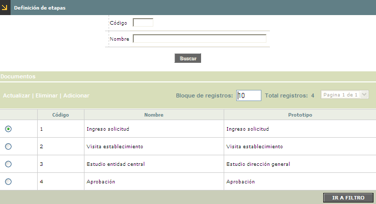
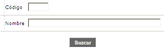
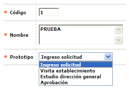
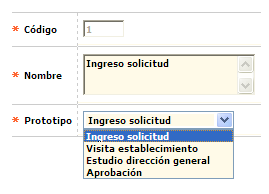
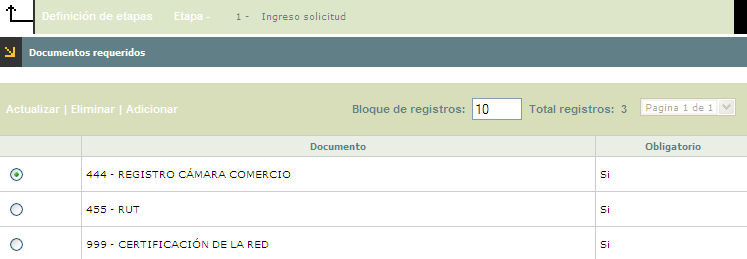
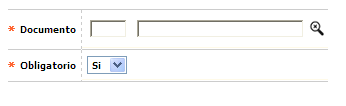
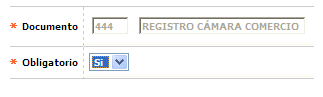

Definición de Etapas
Esta opción permite la consulta de un conjunto de campos en los que se codifican las diversas etapas que deberán surtir las solicitudes; cada etapa se asocia a un prototipo interno de OpenCard, siendo factible que un mismo prototipo pueda tener asociados dos o más etapas ya que se le ofrece a la entidad la posibilidad de dar un nombre diferente a cada una de ellas, dependiendo del tipo de producto. Cuenta con una opción llamada Documentos.

Filtro:Se pueden realizar consultas a través de las siguientes opciones:

|
Código |
Campo numérico de 3 dígitos, en el que se registra el código de cada una de las etapas que ha trascurrido la solicitud del comercio. |
|
Nombre |
En este campo alfanumérico de 60 posiciones, debe incluirse el nombre o breve descripción de las etapas codificadas. |
Adicionar: Si el usuario invoca la opción Adicionar se despliega un formulario con los siguientes campos:

|
Código |
Campo alfanumérico de 4 posiciones, obligatorio, en el que se registra el código asignado a cada una de las diferentes etapas por las que deben transitar las solicitudes. |
|
Nombre |
En este campo alfanumérico de 60 posiciones, obligatorio, se debe registrar el nombre o breve descripción de cada etapa codificada. |
|
Prototipo |
Campo obligatorio que posee lista de valores adjunta de la que debe seleccionarse el código interno con el que el sistema gestiona la correspondiente etapa: Ingreso solicitud, visita establecimiento, Estudio dirección general y aprobación. Como ya se mencionó, un mismo prototipo puede tener asociadas dos o más etapas, o lo que es lo mismo, diferentes etapas definidas por la entidad pueden estar asociadas a un mismo prototipo. |
Actualizar: Si el usuario invoca la opción Actualizar se despliega un nuevo formulario en el cual los únicos campos modificables son: Nombre, y Prototipo.

Documentos: Conjunto de campos en los que se relacionan los diferentes documentos que pueden ser requeridos a manera de soporte en proceso de evaluación de cada solicitud. En la opción Definición de Etapas, de los parámetros de solicitudes, se definen cuáles de estos documentos son requeridos en cada una de las etapas. Cuenta con un botón que permite retroceder a la opción anterior.

Adicionar: Si el usuario invoca la opción Adicionar se despliega un formulario con los siguientes campos:

|
Documento |
Campo numérico de 3 dígitos, obligatorio en el que se registran cada uno de los documentos potencialmente requeridos a los establecimientos a manera de soporte. Tambien es diligenciable por medio de lista de valores, la cual dirige a la opción Definición de documentos. |
|
Obligatorio |
Es este campo se despliega un combo con las opciones Si y No. |
Actualizar: Si el usuario invoca la opción Actualizar se despliega un nuevo formulario en el cual el único campo modificable es: Obligatorio.
